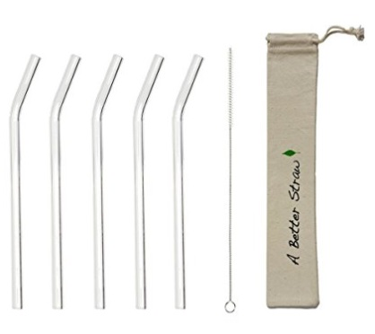

"Only when the last tree is cut down, the last fish eaten and the last stream poisoned, you will realize that you cannot eat money."
Reusable Straws
Why choose a Reusable Straws?
Plastic Straws are one of the Big 4 of Plastic Waste in Ireland. As you have read throughout our web site, plastic degrades into smaller pieces and eventually get ingested by marine and land animals.
There are many options available when it comes to "Zero Waste" and "Eco-Friendly" alternatives to Plastic Straws available in Ireland. Most Pubs and Restaurants are adopting an "On Request" only policy for straws in an attempt to reduce, or they offer reusable Glass or Stainless Steel Straws. Another great option are compostable and Bamboo straws
Click here to shop reusable straws and support a local Irish Business